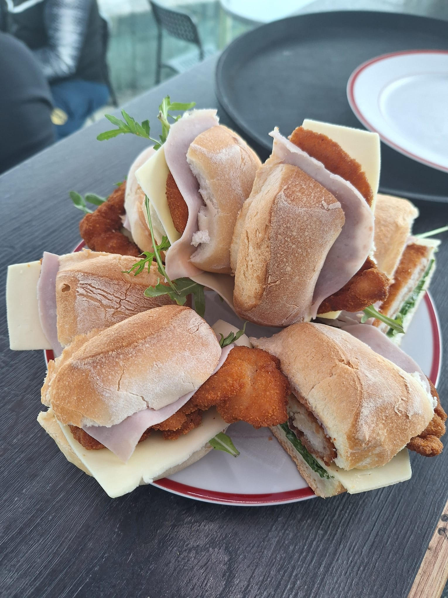

Descrição
As Tapas de Panado são petiscos irresistíveis, feitos com pedaços de frango marinados e empanados, fritos até ficarem dourados e crocantes. Servidos com limão fresco e acompanhados por um molho de maionese de alho, essas tapas são ideais para compartilhar com amigos ou saborear como entrada.
Ingredientes
- Pão baguete artesanal
- Queijo e fiambre
- Peito de frango temperado
- Molho de maionese com alho
Preço
8,00 €
Voltar ao Menu